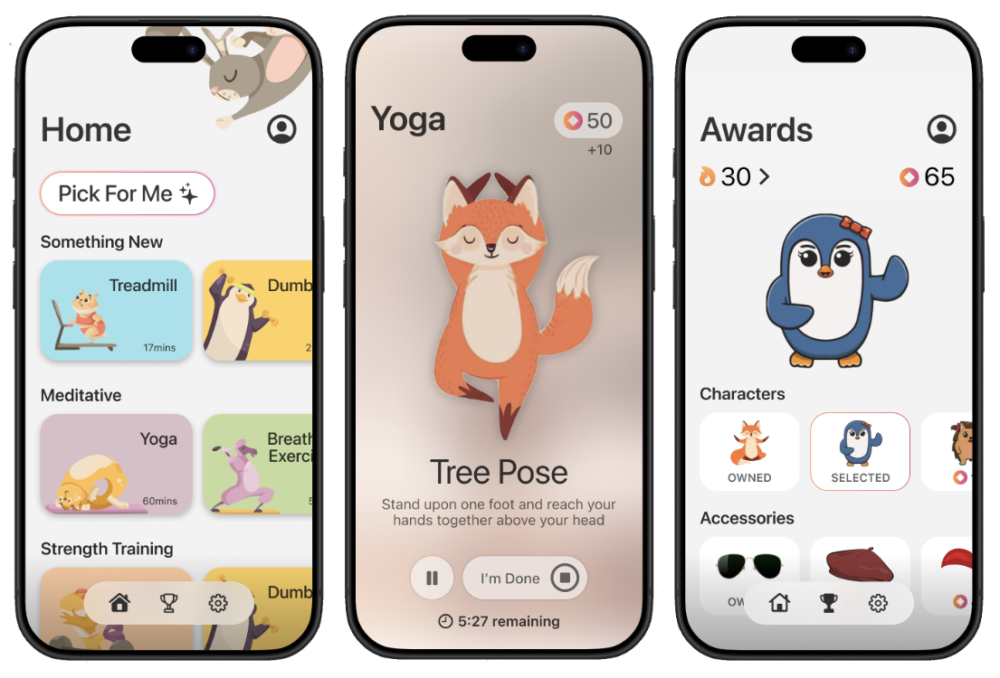
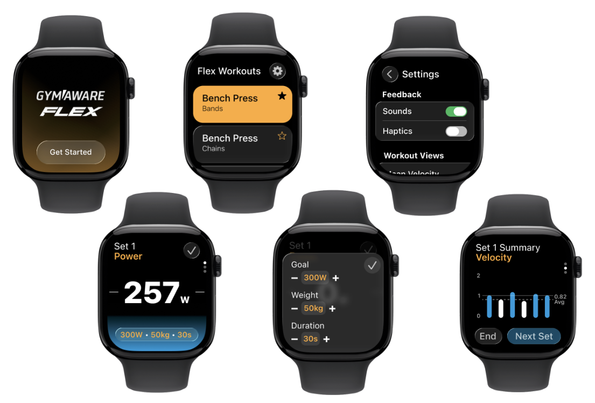
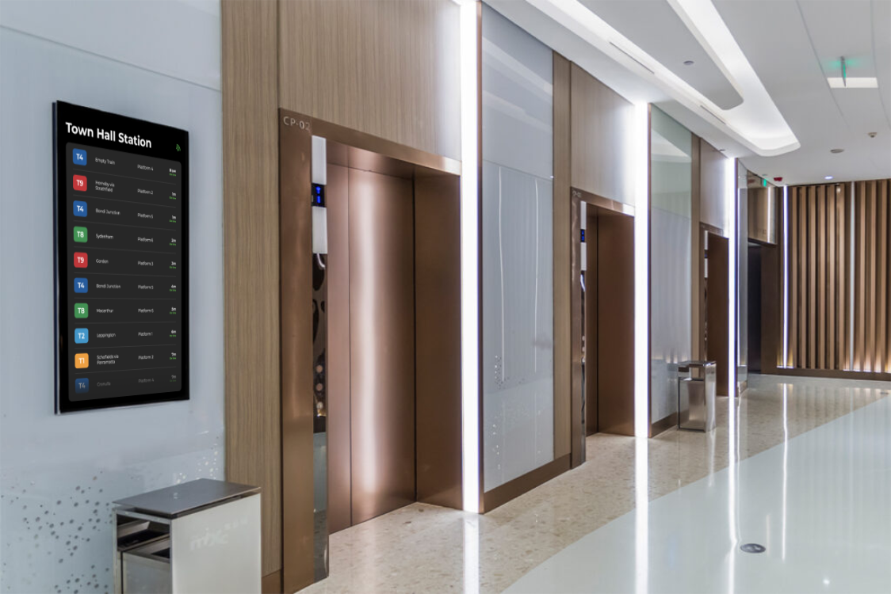

Meadow
Developed as a novel fitness app experience, Meadow is built around users with Attention-Deficit Hyperactivity Disorder (ADHD).
The gameified interface aspires to motivate and prevent boredom through targeted workouts and reward systems. This aims to address symptoms of inattention, hyperactivity, and impulsiveness.

GymAware Watch App
Designed as a companion app to GymAware's Flex app for mobile, the GymAware Apple Watch interface serves to provide a personal and health-integrated experience to Velocity-Based Training Workouts.

Realtime Departure Display ↗
Utilising Transport NSW's GTFS realtime API, the departure display interface is designed to be implemented in lobbies, shopping centres, and other communal spaces.
